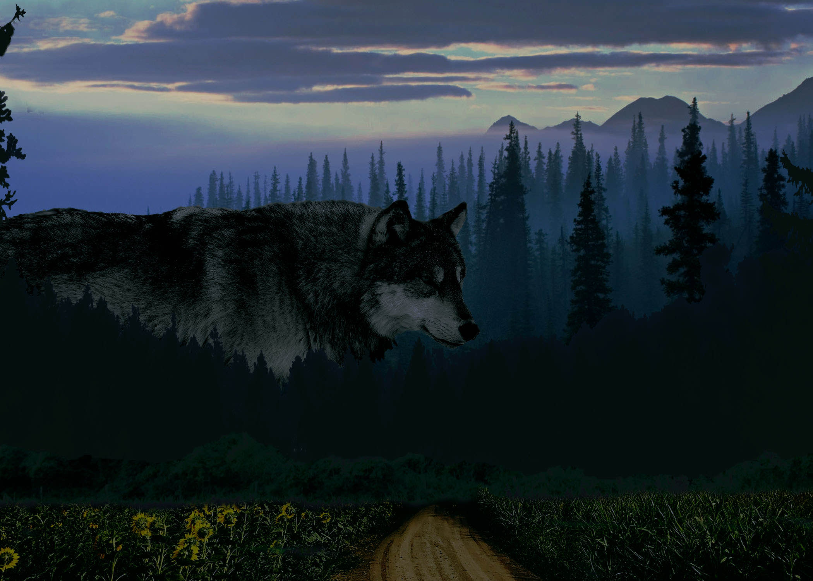

Adobe Illustrator File
Art 222 Digital Art and Design Portfolio
Sebastian Lister
An ongoing collection of projects and assignments from ART 222: Digital Art and Design created between January and May 2025, using the adobe creative suite.
Project 1: SouthWorth Planetarium Vector Graphics
I’ll admit that when I started this project, I felt incredibly lost. I was frustrated with the program, I felt that my ideas were lacking, and what ideas I did have, I simply didn’t know how to translate what I was seeing in my head with the tools that I was learning. Now, looking back on what I managed to produce, and the struggle I had getting there, I am honestly proud of what I’ve done – but there are definitely changes that I would make going forward. The first thing that I should have done was allow myself the time to simply play around with the program, learn its limitations, the tools it offered, and just try things out. I think I was so focused on the end result and trying to make something good that I forgot that I’m here to learn, and in order to do that, I need to allow myself to make mistakes and create things I don’t like. Starting over isn’t a failure, it’s just a step in the journey, and I let my perfectionism and frustration get in the way.
Based on the critiques I got from the class, I believe the best thing I could’ve done was try out different ways to reach the same conclusion. A lot of the lines and stars were transformed by hand(and mouse), which made it hard to be precise with symmetry and sizing, so although my end product was cute and got the job done, so to speak, I think it could be done a lot better using some of the tips and tricks my fellow students offered. Simply using percentages to resize the stars and make sure they’re at the correct angle would have improved the piece highly. I also uploaded the wrong file for one of the versions, which didn’t help the overall messiness of the project that I submitted (the correct file is the one without the lines).
Project 2: Utopia Photoshop Project


I really enjoyed this project, and working through the process of figuring out how to create what I had in my mind. The process included collecting a large amount of photos, and setting out the layers to figure out exactly where everything needed to lay. Once I had that figured out, it was a mix of masking layers, healing tool, color balance, curves, and burn and dodge to create the two separate compositions. I'm very happy with both of them, considering this was my first photoshop project. I did have to restart once, but all in all I really love what I managed to create.
Looking back at the projects after the critique, I think I would've tried to make the layer masks smoother, because I feel like my eyes get stuck on the wolf, ratehr than the over all image of the forest -- it's foreboding because there is a giant wolf, not because of the atmospher. I also would've liked to do a larger, more indepth image of the city, and perhaps will go back to create one as well.